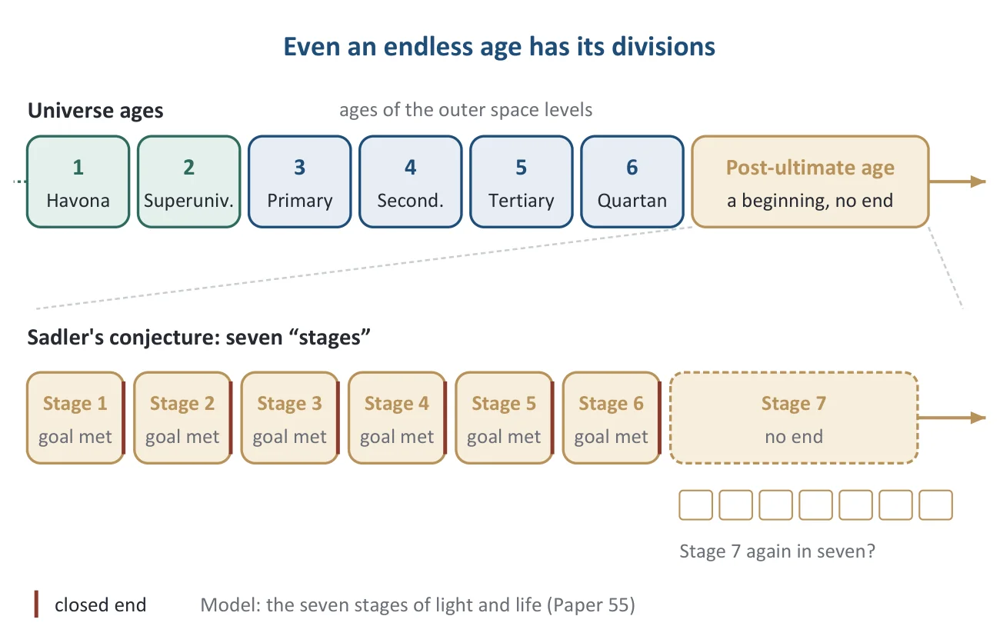

Original: Apéndice XX, La edad post-última (pp. 428–436)
Si las eras posteriores a la aparición del Ser Supremo se llaman edades post-supremas, entonces el tiempo que sigue a la emergencia de Dios el Último, cuando el universo maestro está completo, merece el nombre de edad post-última. Sadler considera esta edad final como una edad que tiene comienzo pero no fin. El apéndice examina su aurora, el modo en que las criaturas del tiempo se adaptan a la eternidad y el cambio en la forma misma del crecimiento.
Puesto que las edades posteriores a la aparición del Supremo se denominaron edades post-supremas, la era posterior a la eventuación del Último y a la terminación del universo maestro se convierte naturalmente en la edad post-última. ¿Es entonces una séptima edad del universo, o una edad «post-universal» situada más allá del universo maestro terminado? Sadler deja la pregunta abierta y admite que esta era puede cerrar la serie anterior y abrir al mismo tiempo una nueva.
La mejor manera de ver cuán diferente será esta edad es enumerar lo que ya se ha terminado en el momento en que comienza.
| Ámbito | Situación en ese momento |
|---|---|
| Universo maestro | Una realidad experiencial terminada cuyo crecimiento está completo, desde Havona hasta el Nivel Cuaternario del Espacio |
| Ser Supremo | Una Deidad post-finita que ha completado una tercera fase de crecimiento y puede cooperar en el nivel absonito dentro de la Trinidad Última |
| Trinidad Última | Plenamente unificada (la condición previa para la eventuación del Último) |
| Dios el Último | Emergido como la segunda Deidad experiencial, coordina todo el universo maestro |
| Aventura Última | Los ciudadanos del universo maestro han alcanzado experiencialmente a Dios el Último y han encontrado al Padre en los niveles absonitos |
| Crecimiento trascendental | El crecimiento absonito ha seguido al crecimiento finito; todo crecimiento relativo ha terminado |
De estos puntos, el que la revelación afirma claramente es que la eventuación del Último y la terminación de la creación maestra son dos caras de un mismo acontecimiento.
La eventuación completada del Último implica que se completó la creación maestra e indica el surgimiento pleno de esta Deidad trascendental.106:4.2
Lo que a Sadler le parece más característico es la forma de esta era. La primera edad tuvo un fin en el tiempo, pero ningún comienzo. La última edad es su imagen especular: comienza en un punto definido, cuando se cierra la sexta edad, la que corresponde al Nivel Cuaternario del Espacio, pero no se vislumbra ningún final.
¿La convierte eso en una línea recta que se prolonga para siempre? Sadler cree que no, y recurre a la historia de un mundo habitado como modelo. Según El libro de Urantia, en un planeta evolucionario se despliegan siete épocas de vida humana [52:0.1], y la última de ellas, la era de luz y vida, se divide a su vez en siete etapas. Las seis primeras de estas etapas comienzan y terminan; solo la séptima no tiene cierre. Sadler conjetura que la edad post-última se dividirá según el mismo principio, y que su séptima etapa podría dividirse a su vez en siete. Incluso una edad sin fin, desde este punto de vista, tiene articulaciones y divisiones.

Según los cálculos del Apéndice XVI, si el gran universo se toma como una unidad, el universo maestro asciende a unos cien millones. Ese tamaño desafía la imaginación, pero el universo maestro sigue teniendo un límite exterior, y la eternidad es larga. Tarde o temprano ese límite habrá de alcanzarse, y con ello la Aventura Última llegará a su fin.
En ese momento, Dios el Último coordinará toda la creación maestra, junto con las dos Trinidades, en el nivel de la ultimidad de la Deidad, mientras que el Ser Supremo seguirá siendo soberano de los universos interiores. Sadler imagina que nuestro propio planeta habrá ido mucho más allá de la séptima etapa de luz y vida, hasta algún estado último. La revelación habla, en efecto, de la persistencia de tales mundos.
por lo que sabemos, estos mundos establecidos en luz y vida están destinados a continuar a través de las edades eternas de todo el tiempo futuro.55:0.3
Para Sadler, el universo maestro completado es a la vez un final y un comienzo. Menciona cinco desarrollos que lo llevan del estado estático del destino cumplido al estado dinámico de la búsqueda de uno nuevo.
Sadler sostiene que la segunda Trinidad experiencial actuará hacia fuera, más allá del universo maestro, y no dentro de él. La revelación sugiere igualmente que su función alcanza más allá de la creación maestra.
Pero nuestros conceptos sobre la función plena de esta Trinidad experiencial segunda parecen implicar algo más allá aun del vasto universo maestro.106:6.2
En otras palabras, el universo maestro terminado se convierte en un nuevo «universo nuclear» para el Cosmos Infinito que se formará a su alrededor. Havona fue en otro tiempo el núcleo de los superuniversos; ahora el universo maestro entero se convierte en un núcleo rodeado de un citoplasma mucho mayor.
Aquí Sadler se vuelve hacia la historia humana. Somos criaturas del tiempo, pero a medida que maduramos nos liberamos gradualmente del confinamiento al momento presente. Nuestras decisiones se nutren más profundamente del pasado y miran más lejos hacia sus consecuencias. Después de la supervivencia, este lapso se amplía sin comparación. Un billón de años de vida lo llevaría a uno a la edad presente de la nebulosa de Andronóver y, según la aritmética de Sadler, cuando termine la sexta edad seremos cinco billones de veces más antiguos que Andronóver.
La fusión con el Ajustador del Pensamiento añade una dimensión más.
Entre estas nuevas dotes podemos mencionar: fijación de la cualidad de divinidad, experiencia y memoria de la eternidad pasada, inmortalidad y una fase de la absolutez potencial cualificada.112:7.1
El cálculo de Sadler es el siguiente. Supongamos que la memoria de la eternidad pasada que trae el Ajustador se asimila gradualmente, al paso de nuestro propio crecimiento. Después de un billón de años de vida, asimilar otro billón de años de esa memoria da un pasado recordado de dos billones de años; si la previsión se extiende igual de lejos, la base temporal se convierte en cuatro billones de años. Uno estaría entonces captando el tiempo cuatro veces más rápido de lo que el tiempo transcurre en realidad, un avance seguro en la comprensión cuantitativa de la eternidad. Un sentido cualitativo de la eternidad, añade Sadler, surge cuando se pasa al Paraíso desde el circuito más interior de Havona.
Sadler vuelve a los mecanismos de crecimiento tratados en el Apéndice VII y los ordena desde otro ángulo.
| Mecanismo | Cuándo opera | Carácter |
|---|---|---|
| Existencial | La primera edad: cuando se originaron el universo central y sus residentes | La Deidad existencial actúa existencialmente |
| Experiencial | La edad presente y las edades post-supremas | La Supremacía y la Ultimidad actúan como un amortiguador que filtra los potenciales de los Absolutos |
| Existencial-experiencial | La edad post-última | El amortiguador subinfinito ha desaparecido; el crecimiento se encuentra directamente con el potencial infinito de los Absolutos |
Todo el crecimiento del universo maestro está entretejido con el crecimiento de la Deidad subinfinita. El crecimiento finito termina cuando se completa la poder-personalización del Supremo, y el crecimiento absonito termina cuando emerge el Último. En ese momento, el crecimiento «relativo», es decir, toda clase de crecimiento situado entre la imperfección y la perfección absoluta, pertenece al pasado. Llámese como se llame al crecimiento que sigue (coabsoluto, absoluto asociado o absoluto limitado), Sadler concluye que ya no es crecimiento relativo.
¿Cómo será, entonces, el crecimiento en la edad final? Sadler busca una pista en los tres niveles de manifestación de la Deidad expuestos en el Prólogo. Dios el Último funciona en los «niveles creativos finales» de la realidad de la Deidad, y Dios el Absoluto funciona más allá de ellos.
En este nivel supercreativo, la Deidad experimenta el agotamiento del potencial personalizable, encuentra el cumplimiento de la divinidad0:2.18
El crecimiento post-último es, por tanto, supercreativo, y tiene lugar en niveles absolutos donde no rigen ni el tiempo ni el espacio.
¿Por qué habría de importarnos esto? Sadler está convencido de que los finalistas entrarán en este crecimiento. La revelación dice que la personalidad humana posee una séptima dimensión, un «absoluto asociable» [112:1.9], y el propio Ajustador apunta hacia tal destino.
En último análisis, los fragmentos Paternales deben ser un don del Dios absoluto a aquellas criaturas cuyo destino abarca la posibilidad del alcance de Dios como absoluto.107:1.6
Una meta como el Absoluto Universal puede alejarse más deprisa de lo que nos acercamos a ella [10:8.8]. Sin embargo, a los ojos de Sadler, esto no es un callejón sin salida. Estamos hechos de tal manera que podemos permanecer para siempre dentro de la corriente del crecimiento.
Los términos «edad post-última» y «Aventura Absoluta» son de Sadler. Respecto a la tercera etapa del Ser Supremo, la revelación presenta varias especulaciones sin decidirse por ninguna [116:0.5]. Sadler afirma también que los mundos que alcanzan la quinta etapa de luz y vida perdurarán para siempre, y cita 55:0.3 y 55:11.2; lo que el texto afirma en realidad es la continuidad de los mundos «establecidos en luz y vida». Tomar la quinta etapa como umbral es lectura propia de Sadler.